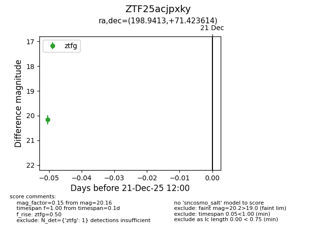
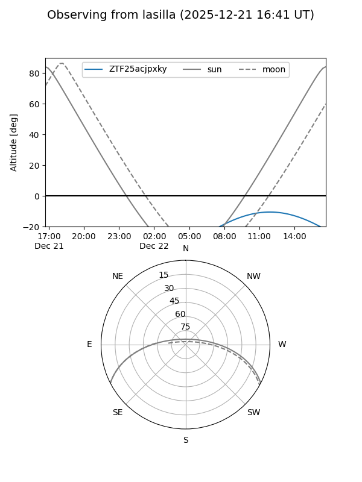
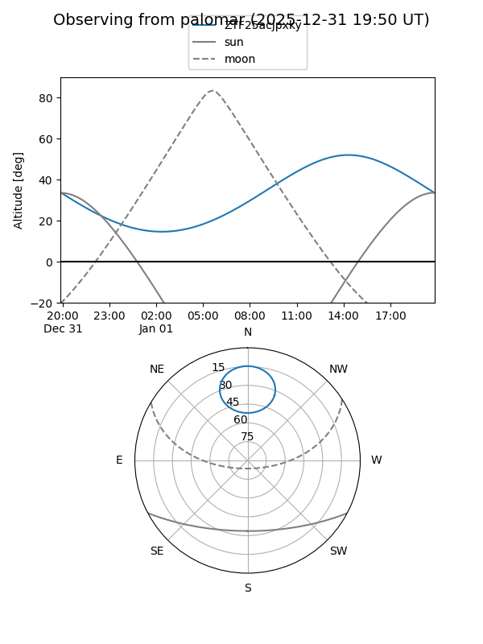

ZTF25acjpxky
Target ZTF25acjpxky at 2025-12-21 12:02
Aliases and brokers:
FINK: fink-portal.org/ZTF25acjpxky
Lasair: lasair-ztf.lsst.ac.uk/objects/ZTF25acjpxky
ALeRCE: alerce.online/object/ZTF25acjpxky
alt names
ZTF25acjpxky (ztf,fink_ztf)
Coordinates:
equatorial (ra, dec) = 198.9413,+71.42361
equatorial (HMS+DMS) = 13:15:45.90,+71:25:25.01
galactic (l, b) = (120.1682,+45.57387)
Flags:
Photometry:
last ztfg=20.16
1 ztfg detections
Lightcurve

Visibility


Additional plots